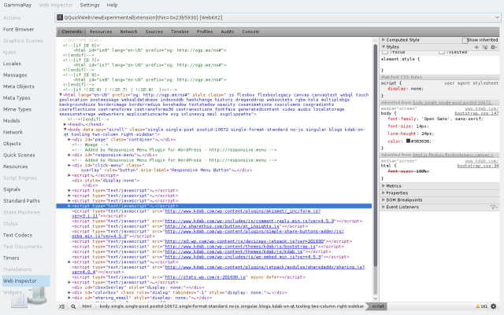

Styles State Machine Debugger
The GammaRay web inspector tool allows you to inspect HTML5 content inside a QWebEngineView.

The web inspector enables access to the built-in diagnostics tool, which allows you to: